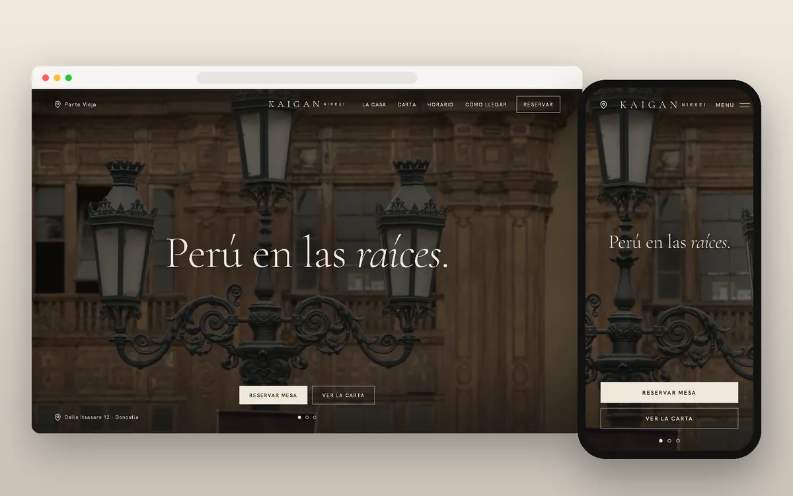
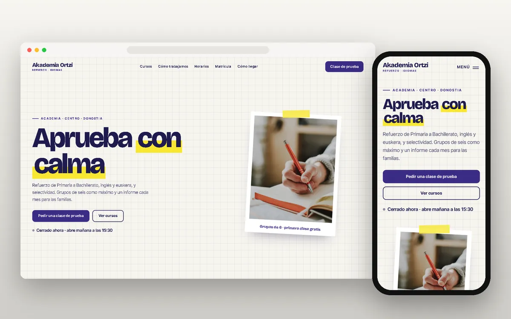
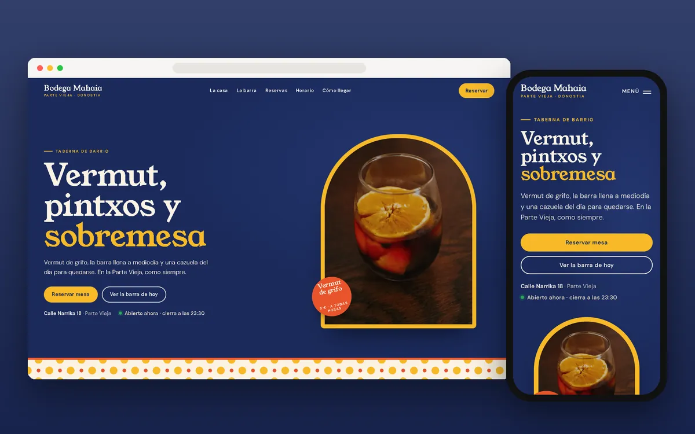
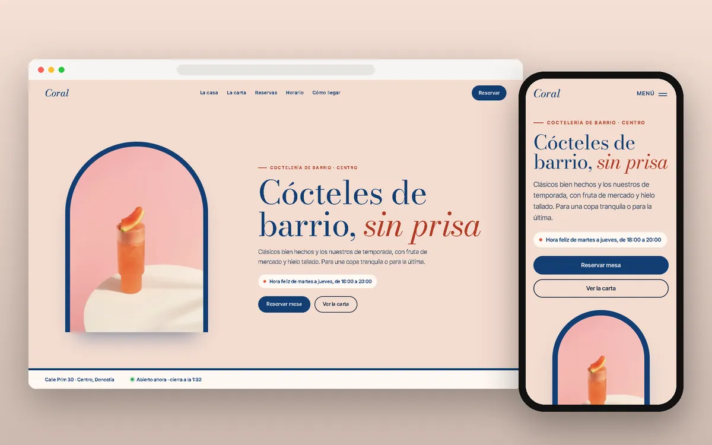
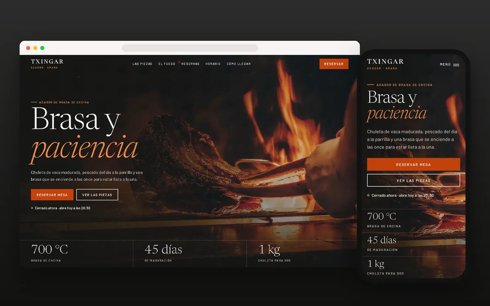
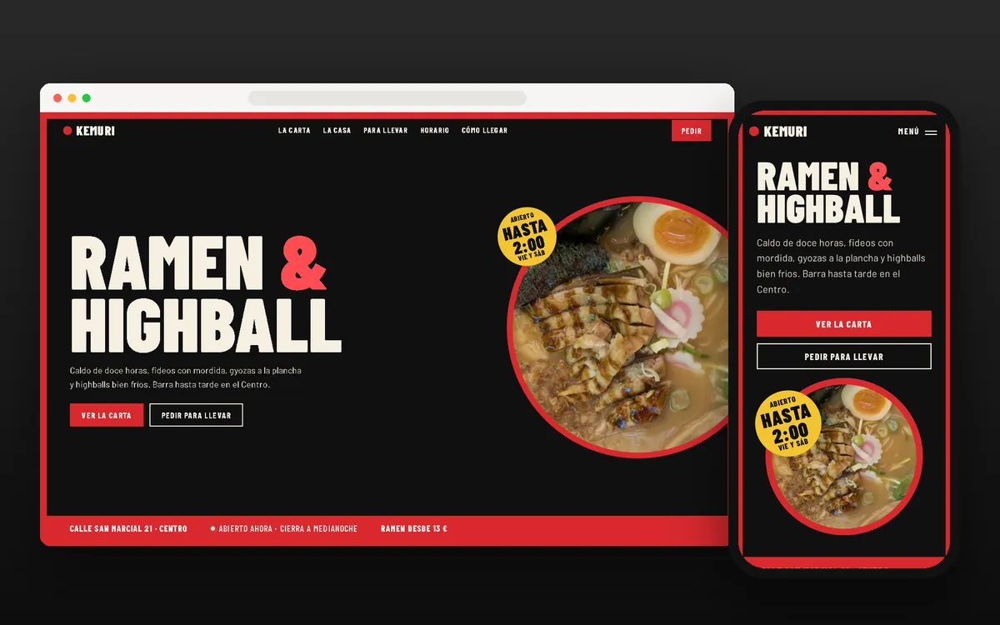
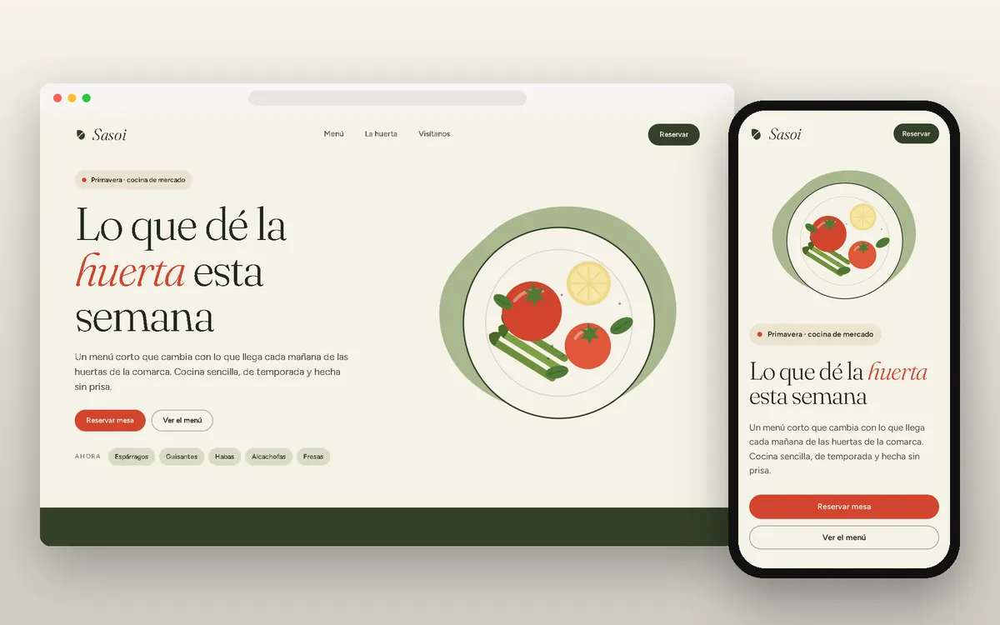

Ejemplos · demos en vivo
Ejemplos de webs que puedes pedir
Son demos con nombres inventados para enseñar estilos. La tuya lleva tu nombre, tus fotos y tu carta o tus tarifas.

Nikkei
Fotos a toda pantalla, serif fina y mucho aire. Para un local con buena imagen.
Ver el diseño
Barbería
La portada es un vídeo: la máquina en plena faena, el nombre enorme y los precios a la vista. Para barberías.
Ver el diseño
Estética de lujo
Mucho aire, serif ligera y los rituales con su duración y su precio. Para centros de estética.
Ver el diseño
Estudio de tatuaje
Negro tinta, cursiva enorme y los trabajos primero. Para estudios de tatuaje.
Ver el diseño
Pescadería
Un pesquero entre gaviotas, en vídeo, y el género del día con su precio. Para tiendas de barrio.
Ver el diseño
Taller mecánico
Una orden de trabajo en la portada y los precios orientativos claros. Para talleres.
Ver el diseño
Supermercado familiar
La fruta en grande, las ofertas como etiquetas de precio y el pedido por WhatsApp. Para tiendas de barrio.
Ver el diseño
Academia
Papel cuadriculado, el titular subrayado y los cursos con su precio. Para academias.
Ver el diseño
Fisioterapia
Calma, serif suave y «¿dónde te duele?» como botones. Para clínicas de fisioterapia.
Ver el diseño
Taberna
Serif robusta, azulejos y el vermut en un arco, con fotos de la barra. Calor de barrio.
Ver el diseño
Café
Amarillo plano, titular enorme y letra de máquina de escribir, ahora con fotos del obrador.
Ver el diseño
Coctelería
Serif de alto contraste y el cóctel dentro de un arco azul. Elegante sin ser caro.
Ver el diseño
Asador
Serif ligera, la brasa a pantalla completa y el precio por kilo bien claro.
Ver el diseño
Cartel
Cartel callejero: marco rojo, letra condensada gigante y el ramen en un círculo.
Ver el diseño
Mercado
Luminoso y botánico: serif suave, un plato de temporada y proveedores a la vista.
Ver el diseño01 / Contacto
Hablamos hoy y mañana tienes boceto
Escríbeme por donde quieras. Si me llega tu comanda por WhatsApp te respondo con el boceto y el plazo, sin compromiso.